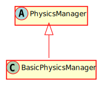

Hierarchy-Diagram
{kind=link}
Legend
 class
class
 abstract class
abstract class
Hierarchy
- PhysicsManager
- BasicPhysicsManager
Index
Constructors
constructor
Parameters
options: Record<string, any>
Returns BasicPhysicsManager
Properties
Protected collision
An array of the collision masks for each group
Protected dynamic
The array of dynamic nodes
Protected emitter
The event emitter for the physics system
Protected group
Maps layer names to numbers
Protected group
Maps layer numbers to names
Protected receiver
The event receiver for the physics system
Protected static
The array of static nodes
Protected tilemaps
The array of tilemaps
Static Protected Readonly DEFAULT_
The default group name
Methods
Protected collide
Handles a collision between this node and an orthogonal tilemap
Parameters
node: Physical
The node
tilemap: OrthogonalTilemap
The tilemap the node may be colliding with
overlaps: AreaCollision[]
The list of overlaps
Returns void
deregister
Removes references to this object from the physics managerr
Parameters
node: Physical
Returns void
deregister
Removes references to this tilemap from the physics managerr
Parameters
tilemap: Tilemap
Returns void
destroy
Returns void
get
Gets all group names associated with the number provided
Parameters
groups: number
A mask of groups
Returns string[]
All groups contained in the mask
get
Retrieves the layer number associated with the provided name
Parameters
group: string
Returns number
The layer number, or 0 if there is not a layer with that name registered
Protected parse
Parses the options for constructing the physics manager
Parameters
options: Record<string, any>
A record of options
Returns void
register
Registers a gamenode with this physics manager
Parameters
node: Physical
Returns void
register
Registers a tilemap with this physics manager
Parameters
tilemap: Tilemap
Returns void
set
Sets the physics layer of the GameNode
Parameters
node: Physical
The GameNode
group: string
The group that the GameNode should be on
Returns void
update
Updates this object.
Parameters
deltaT: number
Returns void
ALGORITHM: In an effort to keep things simple and working effectively, each dynamic node will resolve its collisions considering the rest of the world as static.